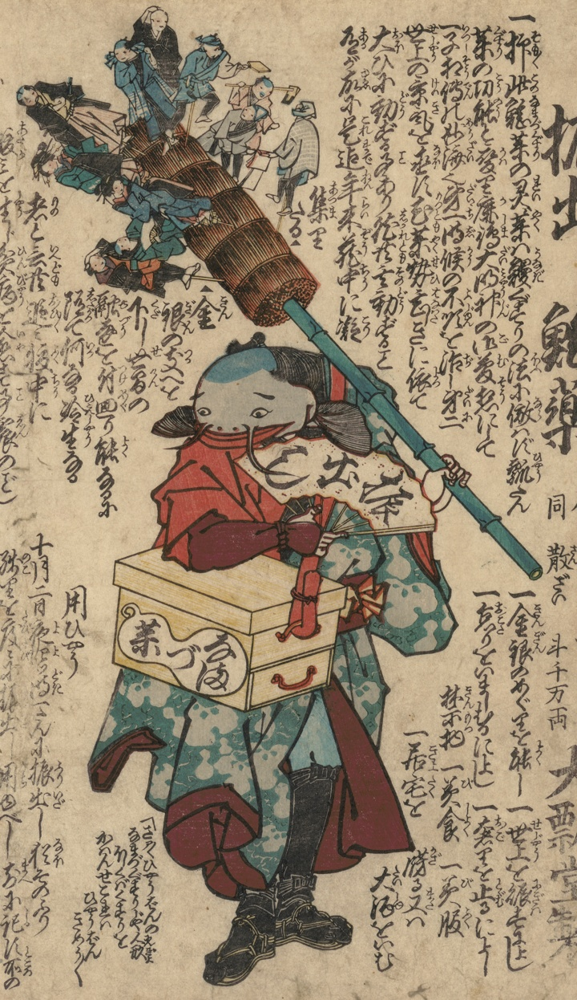

鯰；ナマズ

薬売りの姿をした鯰。肩にかけた箱にはなまず薬、左手の扇子には振出しと書かれている。右手に持つ棒の藁を束ねた部分には、遊女や職人などの人形がさしてある。
著作者：不明／出典：親書誌：U426_nichibunken_0464：振出し鯰薬；フリダシナマズグスリ／日付：2025／資源識別子：U426_nichibunken_0464_0001_0000
Copyright (c)2010- International Research Center for Japanese Studies, Kyoto, Japan. All rights reserved.